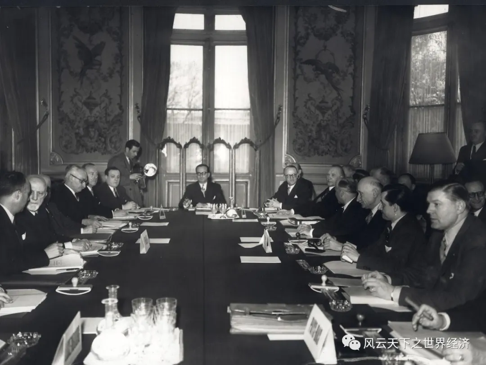
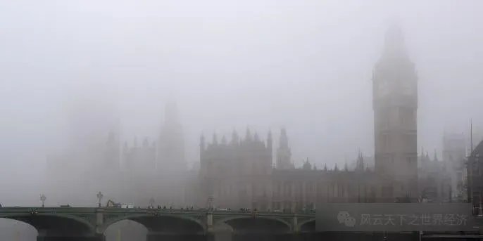

英国时间2022年9月8日下午，“伦敦桥倒塌”的钟声在白金汉宫响起，这位跨越20世纪英国和欧洲历史发展最为庄严而肃穆的见证人，伊丽莎白二世，终离我们而去。20世纪，世界飞速变革的身影，正如这位长寿的君主一般，仍镌刻在世界经济史的回忆之中。
这不免令人想起1952年，英国女王成为“伊丽莎白二世”的那日，她正在肯尼亚，在代替父亲“巡游”英联邦国家，从树屋下来的那一刻，她从公主“不合时宜”地蜕变为女王。当时只有25岁的她或者从未做好见证20世纪这流星般灿烂的时代的准备，或许也未曾想过，1952年铺垫了20世纪乃至21世纪的一切探索与进步的根源。
谋求独立自主的1952：不合时宜的王室上台与“独立经济”的崛起
曾经世界上最大的殖民国家，英国，在1952年迎来了一位见证着英国日落余晖的女王，或许她也未曾想过，近百岁的一生之中，自己以领导人的身份见证了母国走向暗淡。殖民国的没落，其本质在于这个世界对以英国为代表的百年以来的殖民经济、侵略经济的不满与反抗。
「独立经济体的崛起，一方面表现在第三世界国家反抗殖民的努力」。1952年7月，埃及自由军官组织领导的军队逮捕了反动的高级军官，包围了王宫。7月底，英国在埃及的殖民代理人法鲁克国王迫于形势，签署退位声明，并离开埃及，流亡国外。2月女王的登基，7月英国殖民代理人的逃窜，以及随后20世纪非洲独立运动的拓展，昔日殖民霸主的没落令人唏嘘，或许，这正是新时代来临的前兆。
1952年伊丽莎白二世登基
另一方面，同为资本主义的其他欧洲国家，正在摒弃殖民经济的发展方式，寻求“独立自主”的经济发展模式。二战后，欧洲经济严重受挫，美国为拉拢欧洲各国并遏制苏联，正合时宜地提出了马歇尔计划——这既帮助欧洲快速恢复经济发展，又能让欧洲最终成为美国的附庸。但对于欧洲而言，寻求经济政治独立的出路至关重要，而恰是这个计划给了欧洲独立发展新的思路——联合。
这一联合从1952年生效的欧洲煤钢共同体开始。欧洲煤钢共同体是欧洲漫长历史上出现的第一个拥有超国家权限的机构。此后，类似的经济、军事等共同体在欧洲频频出现，最后演变成了我们现在所看到的欧盟。如今，欧盟以一个独立的整体出现在国际舞台上，他们能够实现经济、政治上的相对独立，这是1952在20世纪乃至21世纪的今天留下的一个重要的烙印。

1952年欧洲煤钢共同体（ECSC）成立并开启欧洲一体化进程
英国王室新的变革好似是旧殖民经济在20世纪的残影，殖民经济是依靠剥夺国家主权而掠夺的经济模式，但在1952年，越来越多的经济体表达了寻求自主发展的意愿，这为当今的多极格局埋下了伏笔。在美苏冷战的背景之中，谋求自主本身是一个很艰难的事情，但是所有的努力，到今日都镌刻下了繁荣的烙印——21世纪，中国成为了世界第二大经济体，成为能与美国抗衡的重要势力；欧盟，他们至少有能力去选择自己的经济发展模式和政治态度；第三世界国家，在国际上的话语权也不断增强。
独立自主背后体现的是，在全球化浪潮下，一个经济体强大的“自治力”——迎接全球化浪潮，需要有不被它裹挟的定力。全球化并非是一个“平等”的现象，在20世纪大规模全球化开始之前，经济体间的实力早已存在明显分化，当全球化开始之时，有的国家已然吹响了胜利的号角，有的国家仍然踟蹰不前。当相对落后的国家与巅峰的国家在一个沙场上时，合理的策略就尤为重要。一味地模仿，或是一味地反抗，都会将自己置身于风险之中——成为发达国家的“污染天堂”，或是与发达国家完全隔绝交往，都无法抵御全球化下世界的风风雨雨。利用全球化交流之中进步的思想观念，与本国优势禀赋的结合，找到一条可以抵御全球化风雨的经济发展道路，是独立发展的根本要义，也是1952年的给我们的启发。
前瞻的1952：当“环境”成为经济发展的内生变量
英国作为前两次工业革命的领导者，在物质技术较为领先的状态下，也率先成为了经济发展模式转型的领路人，但是这样的领路，带着无法挽回的悲哀，也成为了20世纪乃至今日全球发展的警钟。
两次工业革命加速了世界的运转，人们在贪婪地享受着科技的快捷时，忘记了曾经湛蓝的天空、洁净的水源、清澈的空气，而当环境被破坏时，环境也会反过来向人类施以报复。1952年12月5日至9日，由于气温低、反气旋、无风以及大量燃烧煤炭所产生的空气污染，一场大雾遮住伦敦本该闪耀的工业城市的光芒。英国报道表示，伦敦雾霾导致了一周四千人的死亡，并导致十万以上人受到呼吸道疾病影响。雾霾兵临城下，极低的能见度打乱了人们的正常生活。机场关闭，铁路严重晚点，路上的司机和行人面临着交通事故的危险。

1952年12月持续五天的大雾笼罩伦敦
1952年，人们享尽由两次工业革命物质生活飞速进步所带来的便捷时，环境终于重重反击。诚然伦敦雾霾是天灾人祸不幸的巧合，但是，以煤炭为主要能源结构的经济发展模式确实走向了必须谋求改变的十字路口。此后，在英国，许多关于清洁能源的环保法案法律出台，并启动能源结构转型。
这一次，英国成为了能源结构转型的领头羊。1956年，伊丽莎白二世亲手启动了考尔德霍尔核电站。这是世界上最早的商业化规模运营的核电站。在20世纪50年代，英国煤炭在其能源结构的占比几乎为百分百，而现在，这一比例仅有5％。
矛盾尖锐的环境问题也催生了经济学理论创新，或许这也是1952这盏明灯所带来的惊喜收获。20世纪，外部性理论开始在环境方面得到广泛的发展和应用。例如，庇古在《福利经济学》理论中提出的“庇古税”概念，它是对任何产生负外部性的市场活动的税。该税种旨在纠正市场失灵，并通过将税率设置为等于负外部性的外部边际成本来进行纠正，最终达到恢复市场健康发展的目的。科斯定理告诉我们，如果我们能够明确产权，在交易成本为零的情况下，资源配置依然能达到帕累托最优。在20世纪末期，库兹涅茨曲线被引入了环境领域。1991年美国经济学家Grossman和Krueger首次实证研究了环境质量与人均收入之间的关系，指出了污染与人均收入间的关系为“污染在低收入水平上随人均GDP增加而上升，高收入水平上随GDP增长而下降”，这呈现了一个倒U型关系。
1952年一场雾霾的教训，激发了未来无限的可能，不论是实践上的革新还是理论上的发展。道路上的行车川流不息，当下，我们搭乘着稳定快捷的新能源交通工具，眼帘映入清新宜人的碧水青山之时，不知是否会将过往的阴霾忘却，不知是否会想象未来的世界……
回顾1952：理想与现实是否背离？
1952年，许多经济体寻求独立自主，和绿色发展理念的萌芽，引导着现在的我们思考，我们需要怎样的经济增长？怎样的发展模式，对于一个经济体是可持续的？如今，人类真的找到了1952年的答案了吗？
殖民经济时期的“伦敦桥”确已倒塌，但是它的影子在今日依然若隐若现。70年过去，埃及看似不再是殖民地，但是其依然紧紧依附于国际市场。受限于埃及2017年《投资法》对本地化保护的限制，埃及无法将外商投资中“本地化生产”转化成埃及本国本土的制造业优势，导致埃及成为严重依赖国际市场的“乞丐玩家”。除此之外，近年来，埃及通过油气、苏伊士运河等发展“地租经济”，看似促进了经济快速增长，但是国民经济的外部依附性进一步增强，这样的经济独立纯属“行崄侥幸”，毕竟，单脚独立并非真正的独立。欧盟委员会于2023年7月公布了一项人事任命，由美国耶鲁大学教授菲奥娜·莫顿出任欧盟反垄断部门的关键岗位，专门负责监管在欧洲经营的美国高科技公司，虽然她最后选择了离职，但是美国对欧盟“公开渗透”这一举动，足以说明欧盟本身的独立性仍然存疑。
1952年天空的阴霾，在21世纪的今日仍有它的身影，但是这样的阴霾不只是雾霾，而是更加艰巨而深层次的风险。一方面，极端天气增多导致减排的工作愈发困难，干旱、热浪等极端天气事件以及不少核电站停运导致二氧化碳排放量增加。2022年，全球与能源相关的二氧化碳排放量达到368亿吨以上，比上年增加3.21亿吨，增幅为0.9%。另一方面，“绿色”被扭曲成了一种新型的经济、政治工具。在深度全球化的当下，绿色发展不只是环境问题，更是经济、政治问题盘根交错而成的复杂系统。例如，近期欧盟推出的碳边境调节机制，就存在着借限制钢铁、水泥等高碳产品生产以打击发展中国家经济发展的嫌疑，他们认为“发展中国家受益于‘较低的环保标准’”，这是多年来发达国家诟病发展中国家产业竞争力“不正当”的借口。并且，他们想要借碳排放规则的制定扩大欧盟在国际政治中的话语权，努力成为未来游戏的“规则制定者”。在当前，绿色环保不再只是从前那般为了可持续发展的崇高使命，而是沦为沾满着政治硝烟的武器，让那些本就处于弱势的国家在风雨飘摇中感到颤颤巍巍、难以前行。
净零排放理念在21世纪成为全球为数不多的共识
各个经济体在寻找经济发展痛点的解决方案时，必定面临着转型的阵痛，当改革进入深水区，必然在探索中会回溯、会遭遇挫折。达到可持续的经济发展状态从来不是一蹴而就的工作，但当我们回望1952年，曾经冉冉升起的新的希望，在70年后依然是未来经济发展漫漫长路中前行的明灯，这正是1952年对我们的意义所在。相比于70年前，这盏明灯在当下所照亮的路途看似崎岖漫长，但是人类跨越千百年对美好生活的追求与无限的智慧和创造力，终将使未知的前方熠熠生辉。